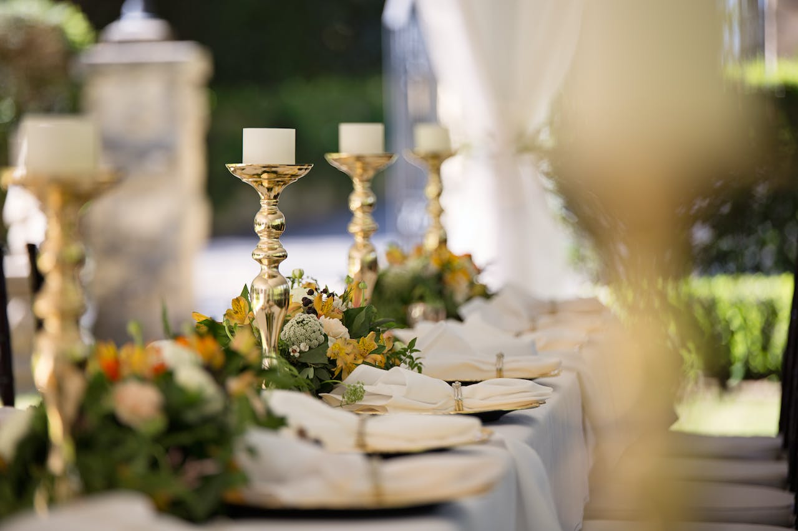
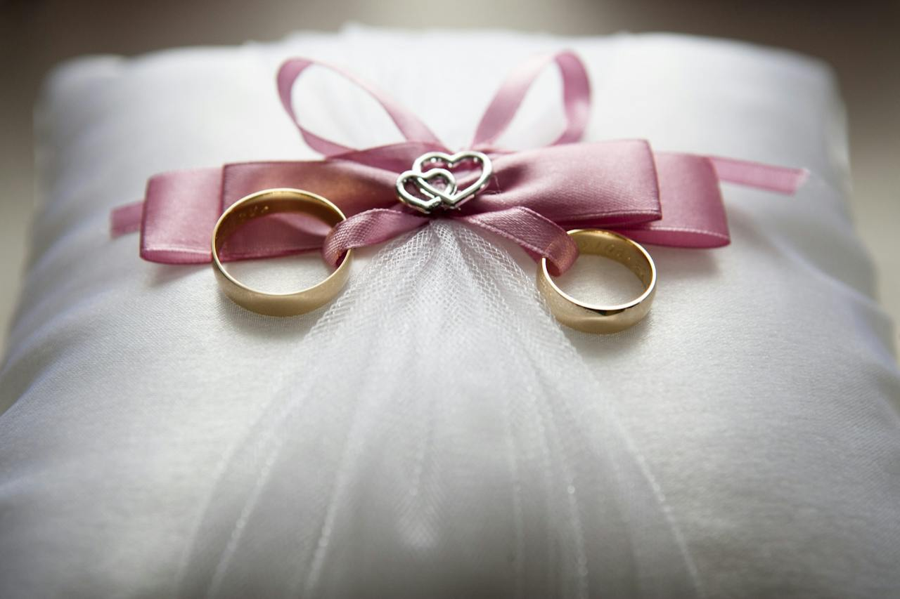

Top Things to Consider:
When considering the financial aspects of a wedding, here are some top things to consider:
Establish a budget:
Determine how much you are willing and able to spend on your wedding. Be realistic and consider both your savings and any contributions from family members, if applicable.
Prioritize expenses:
Decide which aspects of the wedding are most important to you and allocate a larger portion of your budget accordingly. This could be the venue, catering, photography, or other elements that matter most to you.
Create a detailed spending plan:
Break down your budget into specific categories, such as venue, catering, attire, decor, entertainment, and so on. This will help you stay organized and keep track of your spending.
Research costs:
Research the average costs for various wedding services in your area to get an idea of what to expect. This will help you make informed decisions and negotiate prices if needed.
Consider alternatives:
Explore cost-effective alternatives for certain aspects of your wedding. For example, you could opt for a smaller guest list, have a daytime wedding, or choose a less expensive venue or catering option.
Track expenses:
Keep track of all your expenses and review them regularly to ensure you're staying within your budget. Consider using budgeting tools or spreadsheets to help you monitor your spending.
Plan for unexpected expenses:
Set aside a contingency fund for any unexpected costs that may arise during the planning process or on the wedding day itself. This can help you avoid financial stress if unforeseen circumstances occur.
Payment schedule:
Understand the payment schedule for your vendors and plan accordingly. Make note of deposit amounts and due dates to avoid any surprises.
Guest list management:
Be mindful of how the number of guests impacts your overall budget. Remember, each additional guest means additional expenses for food, beverages, and seating.
Debt management:
If you're considering taking on debt for your wedding, carefully evaluate the potential consequences. Assess whether it's feasible to repay the debt within a reasonable timeframe without jeopardizing your financial stability.
Remember, weddings can be costly, but it's important to prioritize what matters most to you as a couple. It's possible to have a beautiful and meaningful celebration within your financial means by making thoughtful decisions and being mindful of your budget throughout the planning process.
General Costs:
The general and average costs of a typical wedding can vary significantly depending on factors such as location, number of guests, level of formality, and personal preferences. However, here are some rough estimates based on industry averages:
Venue:
The cost of a wedding venue can range from a few hundred dollars for a simple location to several thousand dollars for an upscale venue. The average cost is often around $5,000 to $10,000.
Catering:
Food and beverage costs can vary greatly depending on the type of meal (buffet, plated, or stations), menu choices, and the number of guests. On average, couples can expect to spend around $70 to $150 per guest for catering.
Photography and Videography:
Professional wedding photographers and videographers typically charge anywhere from $2,000 to $5,000 or more, depending on their experience, the length of coverage, and additional services or products.
Wedding Attire:
The cost of wedding attire varies widely. Wedding dresses can range from a few hundred dollars to several thousand dollars, with alterations and accessories adding to the overall cost. Groom's attire, including suit or tuxedo rental or purchase, can range from a few hundred to over a thousand dollars.
Flowers and Decor:
Floral arrangements, bouquets, centerpieces, and other decorative elements can vary greatly in cost depending on the size and complexity of the arrangements and the types of flowers used. On average, couples may spend around $2,000 to $5,000 or more on floral and decor.
Entertainment:
The cost of entertainment, such as a DJ or live band, can vary based on the number of hours, the popularity of the entertainment, and any additional equipment or services required. Expect to budget anywhere from $1,000 to $3,000 or more for entertainment.
Wedding Planner:
Hiring a wedding planner can help with coordination, logistics, and ensuring a smooth wedding day. The cost of a wedding planner can range from around $1,500 to $5,000 or more, depending on the level of service and expertise required.
It's important to note that these figures are rough estimates and can vary significantly. It's best to research local vendors and obtain quotes to get a more accurate idea of costs based on your specific requirements.
Different Types of Weddings:
There are various types of weddings that couples choose based on their preferences, cultural backgrounds, and personal styles. Here are some different types of weddings:
Traditional Wedding:
A traditional wedding typically follows cultural or religious customs and rituals. These weddings often incorporate traditional attire, ceremonies, and practices specific to the couple's heritage.
Destination Wedding:
Destination weddings take place in a location away from the couple's hometown. It could be a tropical beach, a historic city, or any picturesque destination. These weddings often combine the celebration with a vacation for the couple and their guests.
Outdoor Wedding:
Outdoor weddings are held in natural settings such as gardens, parks, vineyards, or even private properties. They offer a beautiful backdrop for the ceremony and reception and can be tailored to fit various styles, from casual and rustic to elegant and formal.
Intimate Wedding:
Intimate weddings are characterized by a small guest list, usually consisting of close family and friends. These weddings provide an opportunity for a more personal and meaningful celebration, often with a focus on quality time with loved ones.
Cultural or Theme-Based Wedding:
Couples may choose to incorporate their cultural heritage or a specific theme throughout their wedding. This could involve traditional attire, decorations, music, and cuisine that reflect their cultural background or a chosen theme such as vintage, rustic, or seasonal.
Eco-Friendly Wedding:
An eco-friendly or "green" wedding emphasizes sustainability and minimizing environmental impact. It involves conscious choices such as using recycled materials, eco-friendly decor, locally sourced food, and reducing waste.
Elopement:
Elopements are intimate ceremonies where the couple gets married without a large-scale celebration. They often take place in a private setting or at a destination of the couple's choice, with a focus on the couple's commitment to each other.
These are just a few examples, and couples often personalize their weddings by combining elements from different types or creating something entirely unique. The type of wedding chosen is a reflection of the couple's values, preferences, and desire for their special day.
Opportunity Cost:
The financial opportunity costs of having a wedding refer to the potential financial trade-offs and sacrifices that a couple may need to make when allocating their resources towards their wedding instead of other financial goals or investments. Here are some examples of financial opportunity costs associated with having a wedding:
Savings and Investments:
The money spent on a wedding could have been used for long-term savings or investments. Instead of allocating funds towards the wedding, the couple could have saved for retirement, a down payment on a house, or other investment opportunities that could yield financial benefits in the future.
Debt Repayment:
If the couple has outstanding debts, such as student loans or credit card debt, allocating a significant portion of their financial resources towards the wedding may delay or hinder their ability to pay off those debts. Choosing to prioritize the wedding over debt repayment could result in additional interest charges and a longer repayment timeline.
Emergency Fund:
Having an adequate emergency fund is essential for unexpected expenses or financial setbacks. Using a significant portion of savings for a wedding could deplete the emergency fund or delay its establishment, leaving the couple vulnerable to financial uncertainties.
Travel or Experiences:
The funds used for a wedding could have been allocated towards travel experiences or other meaningful adventures. Couples might have the opportunity to explore new destinations, embark on a dream vacation, or engage in activities they have always desired.
Future Life Events:
The financial resources used for a wedding could have been saved for other future life events, such as starting a family, pursuing higher education, or career transitions. Postponing or downsizing the wedding could provide more flexibility to address these life goals.
It's important for couples to consider these financial opportunity costs and evaluate the long-term impact on their financial well-being. Open discussions about financial priorities, setting a realistic budget, and finding a balance between the wedding expenses and other financial goals can help couples make informed decisions that align with their overall financial objectives.
Utilizing Debt for Weddings:
Going into debt for a wedding can be a challenging decision with potential negative consequences. Here are some reasons why it's generally considered a bad idea to go into debt for a wedding:
Financial Burden:
Taking on debt for a wedding can put a significant financial burden on the couple. It means starting married life with added financial stress and the pressure to repay the debt, potentially impacting their overall financial stability.
High Interest Rates:
If the couple finances their wedding through credit cards or loans, they may incur high interest rates, making the overall cost of the wedding significantly higher over time. This can lead to a long-term financial obligation and potentially restrict the couple's ability to save or invest for other important goals.
Extended Debt Repayment:
Going into debt for a wedding may extend the repayment timeline, delaying the couple's ability to achieve other financial milestones. It can hinder their ability to save for a house, start a family, or pursue other important life goals.
Limited Flexibility:
Debt repayment can limit the couple's financial flexibility in the early years of their marriage. It may restrict their ability to handle unexpected expenses or adapt to changing circumstances, creating additional financial stress.
Marriage and Relationship Strain:
Financial stress is a common source of strain in relationships. Starting married life with significant wedding-related debt can strain the relationship and put pressure on the couple's financial communication and decision-making.
Unrealistic Expectations:
Going into debt for a wedding can create unrealistic expectations and a focus on extravagant spending rather than the true meaning and purpose of the marriage. It's important to remember that a meaningful and memorable wedding can be achieved within a reasonable budget.
While a wedding is a special occasion, it's essential to prioritize financial responsibility and consider the long-term implications. It's generally advisable to plan a wedding based on the couple's financial means and seek alternatives such as budgeting, saving, or scaling back the event to avoid unnecessary debt and its associated challenges.
Ways to Save:
There are several ways to save money when planning a wedding. Here are some strategies to consider:
Establish a Budget:
Set a realistic budget for your wedding and stick to it. Determine how much you can comfortably spend and allocate funds to different aspects of the wedding accordingly.
Prioritize Must-Haves:
Identify the elements of your wedding that are most important to you and allocate a larger portion of your budget to those areas. This allows you to save in other areas that are of lesser importance.
Guest List Management:
Keep your guest list intimate. Limiting the number of guests can significantly reduce costs for catering, venue size, invitations, and other related expenses.
Choose the Right Venue:
Look for affordable wedding venues that suit your style and budget. Consider options such as community centers, parks, or private properties, which can be more cost-effective compared to traditional event spaces.
Off-Peak Season and Day:
Consider getting married during the off-peak wedding season or on a less popular day of the week. Many venues and vendors offer discounted rates during these times.
DIY Approach:
Take on do-it-yourself (DIY) projects for aspects like invitations, decorations, or wedding favors. Get creative and enlist the help of family and friends to make it a fun and cost-saving endeavor.
Simplify the Menu:
Opt for a more straightforward and cost-effective menu, such as a buffet or family-style meal, instead of a plated dinner. Explore options for locally sourced or seasonal ingredients, which can be more affordable.
Borrow or Rent Items:
Instead of purchasing everything outright, consider borrowing or renting items like decor, linens, and specialty pieces. This can save you money and reduce the amount of items you'll need to store or sell afterward.
Negotiate with Vendors:
Don't hesitate to negotiate with vendors for better prices or package deals. Many vendors are open to discussing options and finding solutions that fit within your budget.
Simplify or Skip Traditions:
Assess the wedding traditions and rituals you want to incorporate and consider simplifying or skipping some of them. This can help save costs associated with additional services or items.
Remember, cost-saving measures should align with your vision and priorities for the wedding. It's essential to strike a balance between saving money and creating a meaningful and memorable experience for you and your loved ones.